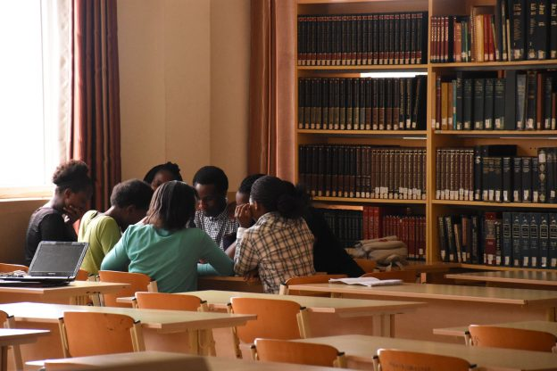

Follow Us
Follow us on social media and be the first to
find out about our news!



Admissions
The Adventist University of Central Africa welcomes you to a both life changing and unique experience of a christian education. AUCA offers bachelors degrees and masters degrees and Diplomas in the following programmes:
Undergraduate Studies
- Faculty of Theology
- Faculty of Health Sciences: Departments of Nursing and Midwifery
- Faculty of Business Administration: Departments of Finance, Accounting, Management and Marketing
- Faculty of Education: Departments of English Language and Literature & French, Accounting and Information Technology, Geography and History
Graduate Studies
- Master of Business Administration: Departments of Finance, Accounting, Management and Human Resource Management
- Master of Arts in Education: Department of Educational Administration
Professional Courses
- Certified Ethical Hacker (C|EH)
- Postgraduate Diploma in Teaching Methodology
- Diploma in Theology
- Cisco Certified Network Associate
- Certified Public Accountants (CPAs) Coaching
- Early Childhood Education
- English Language Proficiency
- Research and Statistics
- Statistical Package for Social Studies (SPSS)